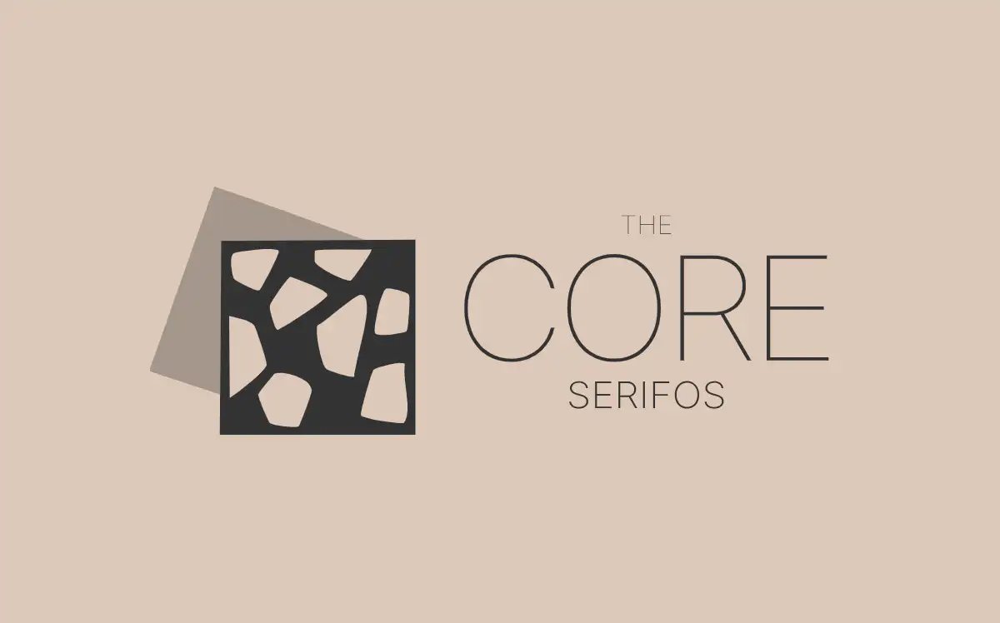
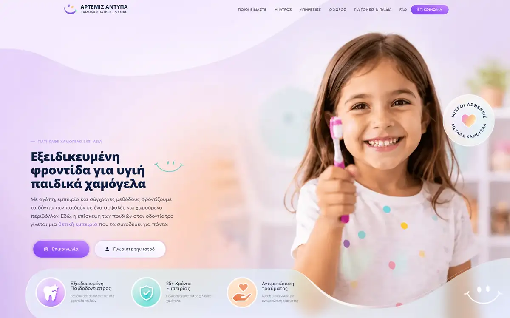
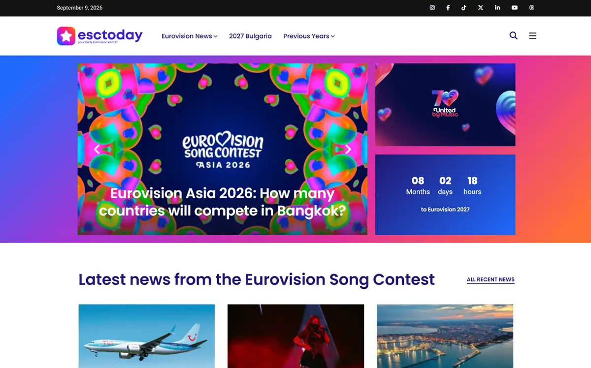

01Thought
What does the visitor need to understand, feel and do? What makes this particular subject worth their attention?
01 / Creative Web Experiences
Some projects need more than a functional website. They need an experience with its own character
I work from the subject first. What makes the brand, place, product or person worth paying attention to? The structure, visual language, interaction and technology follow from there.
The work may already be distinctive. The website still feels interchangeable
This service is for projects that need a digital presence with more intention. A place with an atmosphere. A brand with a point of view. A premium product. A creative practice. A business that simply should not look like everybody else.
The job is to understand what deserves emphasis, decide what the visitor should experience and build a site that carries that idea all the way through implementation.
What does the visitor need to understand, feel and do? What makes this particular subject worth their attention?
Turn that into structure, visual language, interaction, content hierarchy and a technical approach people can actually build from.
Develop the experience and keep the concept intact across browsers, devices, performance requirements and the realities of implementation.

A digital presence shaped around architecture, place and atmosphere. The website uses motion, spatial transitions and a strong visual rhythm to carry the identity into the browsing experience.
Concept, UX thinking, implementation and interaction stay close to each other so the site feels like one piece rather than a design handed over to development.
Visit the website →
A client website that shows how the same approach adapts to a different subject, tone and content need. The goal remains the same: give the digital presence its own character and make the experience feel deliberate.
Visit the website →
A digital presence shaped around architecture, place and atmosphere. The website uses motion, spatial transitions and a strong visual rhythm to carry the identity into the browsing experience.
Concept, UX thinking, implementation and interaction stay close to each other so the site feels like one piece rather than a design handed over to development.
Visit the website →Hospitality and property, architecture and design, premium products and services, cultural or creative work, personal brands, and businesses that need something more authored than a standard website.
We work through the need, concept, structure and build as one connected process.
I translate an existing identity into a digital experience and work out what the website needs beyond the brand guidelines.
I can own the concept and architecture, guide UX and UI, or take the work through development depending on what is already covered.
An idea. A problem. A project that already exists. Bring me what you have and let’s work out what comes next.
Start a conversation →